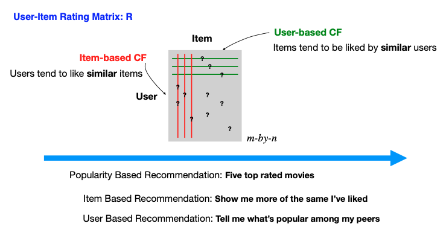

13.3. Collaborative Filtering
The collaborative filtering method replies on an interaction matrix between users and items, known as the rating matrix. Imagine this matrix as an m-by-n grid, where rows represent users, columns represent items.
Within this matrix, some entries are known, which could be explicit or implicit feedback. Explicit feedback might be direct ratings, such as a user’s rating of a movie on Netflix on a scale from one to five, signaling clear preferences. Implicit feedback could come from user behaviors such as clicking on an item or spending time viewing a particular movie, providing subtle clues about their interests.
Constructing this matrix, however, is far from trivial. Challenges arise in distinguishing between a user’s disinterest in an item and mere unawareness of it. Missing entries don’t always mean disliking; they could indicate a lack of exposure. This ambiguity is just one of the hurdles in developing effective recommendation systems.
Assuming we have this interaction matrix, denoted by R, with some entries missing (indicated by question marks), the goal of a recommender system is to fill in the blanks, predicting user preferences for items they haven’t interacted with. This task is akin to matrix completion, a term you’ll often encounter when delving into the mechanics of recommendation systems.
{kind=link}
Collaborative filtering splits into two primary methods: User-based and Item-based.
- User-based CF
This approach posits that similar users will like similar items. If User A liked an item and User B has a similar profile to User A, it’s likely that User B will also like that item. The challenge lies in defining what makes users similar, which we will explore further.
- Item-based CF
Conversely, this method assumes users will like items similar to those they have already liked. If User A liked Item X, and Item Y is similar to Item X, then User A is likely to like Item Y as well.
Crucial to collaborative filtering is the notion of similarity. We need to determine how to quantify the resemblance between users or items, even with incomplete data. Some of the most commonly used similarity metrics include:
- Jaccard Similarity:
Ideal for binary data, it compares users based on the items they have both interacted with, or compare items based on shared users.
\[\frac{|A \cap B|}{|A \cup B|}, \quad \text{ where } A, B \text{ are two sets}\]
- Cosine Similarity:
This measures the cosine of the angle between two vectors in an n-dimensional space. Missing values are ignored or equivalently treated as zeros.
\[\frac{u^t v}{\| u\| \cdot \| v\|}, \quad \text{ where } u, v \text{ are two vectors}\]
- Centered Cosine Similarity (Pearson Correlation):
A variation of cosine similarity first normalizes around a user’s (or item’s) average rating by subtracting the mean of the observed values. Only entries from set \(S = \{ i: u_i \ne \text{NA} \}\) are considered in the calculation.
\[\frac{(u - \bar{u})^t (v - \bar{v})}{\| u - \bar{u} \| \cdot \| v- \bar{v} \|}, \quad \text{ where } u, v \text{ are two vectors}\]
- Note:
In the context of cosine-based similarity measures, it’s customary to define similarity as (1 + cos)/2, ensuring that the similarity values fall within the non-negative range.
Be mindful of a potential issue when calculating centered cosine similarity: the denominator \(\| u - \bar{u} \|\) can become zero, when all non-NA (non-missing) elements of u are constant.
In summary, with a well-constructed R matrix and a thoughtful selection of similarity measures, collaborative filtering can make educated predictions, catering to the diverse tastes of their audience.